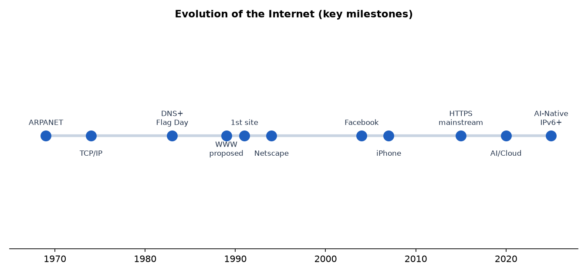
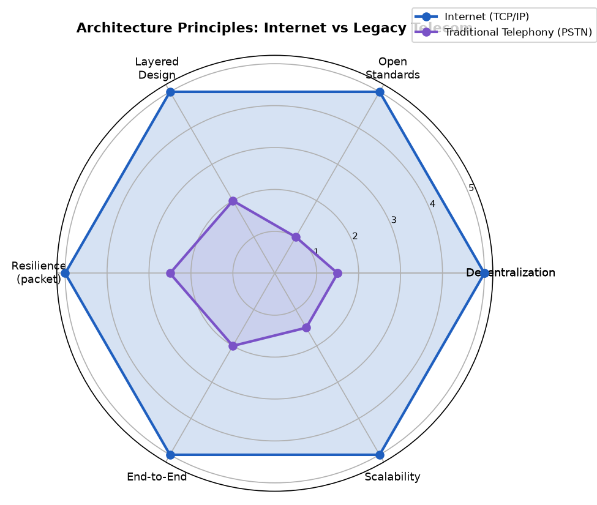
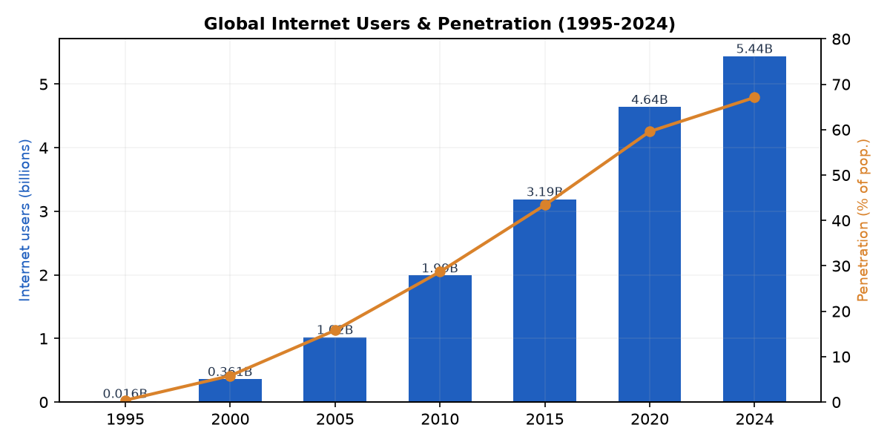
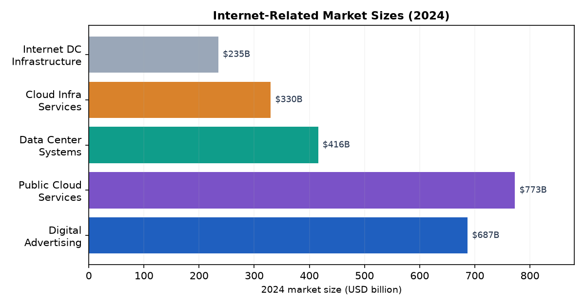
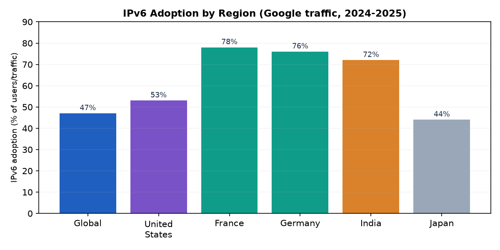
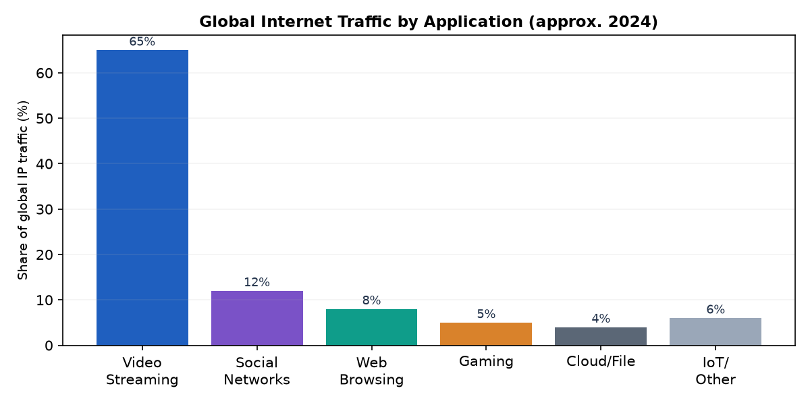
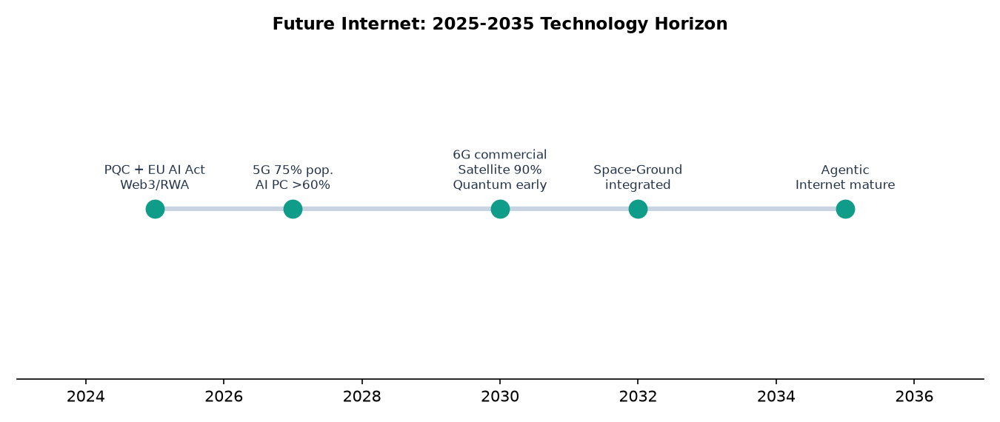

英特网并非单一设备，而是一组通用协议（以 TCP/IP 为核心）互联起来的「网络的网络」。它起源于 1969 年的美国 ARPANET，1983 年 TCP/IP 成为标准（史称「Flag Day」）标志现代互联网诞生；1989—1991 年蒂姆·伯纳斯-李在欧洲核子研究中心（CERN）发明万维网（WWW），把互联网从科研工具变成大众媒介。其后的主线是：商业化（1990 年代 ISP 兴起）、Web 2.0 与社交化（2000 年代）、移动化（2007 iPhone 起）、云与流媒体（2010 年代）、以及当下以大模型与智能体为标志的「数智互联网」跃迁。

| 阶段 | 时间 | 标志与代表 | 核心特征 |
|---|---|---|---|
| 研究网 | 1969—1983 | ARPANET、分组交换、TCP/IP 设计（1974）、DNS（1983） | 去中心、抗毁、跨网互联雏形 |
| 商业化 | 1983—1994 | NSFNet 开放商用、Mosaic/Netscape 浏览器、AOL/瀛海威拨号 | 从科研走向公众，信息消费化 |
| Web 2.0 与社交 | 1995—2009 | 谷歌/亚马逊/腾讯/阿里、Facebook/YouTube、宽带普及 | 读写共存、UGC、平台经济 |
| 移动/云/智能 | 2010—至今 | iPhone/Android、云、流媒体、AI 大模型、IPv6+ | 随时在线、算力即服务、智能体化 |
互联网的灵魂在「架构原则」而非某一台设备：分组交换让网络在局部损坏时仍能送达；四层模型（链路层—网际层—传输层—应用层）把复杂问题分层解耦；开放标准（IETF 的 RFC 文档，至今已发布 9000+ 篇）保证任何厂商设备可互联；端到端原则把智能放在终端而非网络；DNS 把难记的 IP 变成可读域名；BGP 在各自治域（AS）间交换路由；CDN 与 Anycast 把内容推到离用户最近的位置。这些原则共同塑造了互联网的「无中心、可生长、强兼容」。
| 层次/机制 | 代表协议/技术 | 作用 |
|---|---|---|
| 链路层 | Ethernet、Wi-Fi、光纤、5G | 物理传输与帧封装 |
| 网际层 | IPv4 / IPv6、ICMP | 寻址与跨网路由 |
| 传输层 | TCP（可靠）、UDP（高速） | 端到端可靠/实时传输 |
| 应用层 | HTTP/HTTPS、DNS、SMTP、QUIC | 具体信息服务 |
| 路由 | BGP（域间）、OSPF（域内） | 全局可达性 |
| 加速/分发 | CDN、Anycast、DNS 缓存 | 降低时延、扛峰值 |

互联网最棘手的工程难题几乎都来自「在不可靠、异构、且已庞大的基座上持续扩展而不中断」——这恰是它最大的成功带来的负担。
| 工程难题 | 成因 / 影响 | 解决思路与现状 |
|---|---|---|
| IPv4 地址耗尽 | 32 位仅约 43 亿地址，2011 年 IANA 耗尽、2010 年代各 RIR 陆续耗尽 | CIDR 聚合、NAT 续命；根本解 IPv6（128 位，≈3.4×10³⁸）；二级市场 IPv4 单价由 2020 年≈$20 涨至 2025 年 >$50 |
| 路由表膨胀 | BGP 表项 2025 年已超 100 万条，挤压路由器内存/CPU、收敛变慢 | CIDR 聚合、RPKI 路由源验证、MANRS 最佳实践、向域间路由安全加固 |
| 拥塞与时延 | 跨域长路径、路由器排队导致实时应用（视频/会议）卡顿 | TCP 拥塞控制演进（BBR 等）、CDN/边缘下沉、QUIC 协议 |
| 安全与抗攻击 | BGP 劫持/泄露、DDoS、钓鱼；协议设计之初未内置强安全 | RPKI、DNSSEC、DoH/DoT、TLS 1.3 普及、零信任（Zero Trust）架构 |
| 兼容与平滑迁移 | 新协议无法「一刀切」替换旧协议，企业改造动力不足 | 双栈（dual-stack）过渡、Happy Eyeballs、政府强制（如美国 OMB M-21-07、中国 IPv6 行动计划） |
| 能耗与可持续 | 数据中心与网络设备耗电攀升，PUE 与碳排压力 | 液冷、AI 功耗调度、可再生能源、PUE<1.1 目标 |
互联网用户从 1995 年约 1600 万（渗透率 0.4%）增长到 2024 年约 54.4 亿（DataReportal，占全球人口 67.1%）；国际电联（ITU）《2024 年事实与数据》口径为约 55 亿、占 68%——两者仅因统计样本与方法不同，结论一致：人类已进入「三分之二在线」时代。但仍有约 26 亿（32%）人口离线，且高度集中于农村与低收入国家（高收入国 93% 在线 vs 低收入国 27%），数字鸿沟仍是结构性问题。

| 细分市场 | 2024 规模（约） | 主要来源/口径 | 趋势 |
|---|---|---|---|
| 全球互联网广告 | $5,620 亿 — $6,871 亿 | iimedia / eMarketer（口径差异） | 增速回落至 6%—11%，AI 驱动归因 |
| 全球零售电商 | $6.3 万亿（零售口径） | eMarketer；UNCTAD 企业为 $28 万亿 | 占零售 ~20%，移动/社交电商上行 |
| 公有云服务 | $7,733 亿 | Statista（含 SaaS/PaaS/IaaS） | 同比 +22%，GenAI 贡献约半数增量 |
| 云基础设施服务 | $3,304 亿 | Synergy Research | AWS≈30%、Azure≈21%、GCP≈12% |
| 数据中心系统 | $4,161 亿 | Statista | 网络设施约占一半 |
| 互联网数据中心基础设施 | $2,350 亿 | DataHorizzon | CAGR≈11.5%（2025—2033） |

| 区域 | 路线特征 | 代表生态 / 监管 |
|---|---|---|
| 美国 | 发源地＋硅谷平台＋云巨头主导，崇尚数据自由流动与长臂管辖 | AWS/Azure/GCP、Google/Meta/Apple；《云法案》CLOUD Act |
| 中国 | 独特生态（墙内闭环）、网络主权、应用型创新强、自主治理 | 微信/阿里/字节/腾讯/百度；防火墙；《网络安全法》《数据安全法》《个人信息保护法》；IPv6 用户全球第一（≈8.22 亿） |
| 欧盟 | 监管主权优先，「布鲁塞尔效应」输出规则 | GDPR(2018)、DMA、DSA、《AI 法案》(2025) |
| 日本 | 基础设施与制造强，云相对依赖美系 | NTT、富士通、软银 HAPS；大量数据中心（222 座） |
| 印度 | 用户增长最快，IPv6 部署全球领先 | Reliance Jio IPv6 超 93%；UPI 数字支付普及 |

| 应用领域 | 典型形态 | 经验要点 |
|---|---|---|
| 通信 | 电子邮件、即时通讯、VoIP | 异步协作基石；安全靠 TLS/MFA/反钓鱼 |
| 信息与内容 | Web、搜索引擎、流媒体 | 视频已占全球 IP 流量约 65%；CDN+边缘是关键 |
| 社交与 UGC | 社交网络、短视频、直播 | 读写共存放大传播力，也放大假信息与治理压力 |
| 电子商务 | 零售、跨境电商、直播电商 | 中国连续 12 年全球最大网络零售市场（2024 约 ¥15.5 万亿/≈$2.1 万亿） |
| 金融科技 | 网银、移动支付、跨境收付 | 安全与合规是生命线；零信任+加密 |
| 云计算/企业 | SaaS/PaaS/IaaS、混合办公 | 云原生、API 优先、CI/CD；94% 企业已用云 |
| IoT/工业互联网 | 车联网、智能制造、智慧城市 | IPv6+5G 支撑海量终端；预测性维护降本 |
| 远程医疗/教育 | 远程诊疗、在线学习 | 低时延与数据隐私并重 |


| 挑战 | 说明与风险 |
|---|---|
| 碎片互联网（Splinternet） | 地缘与数据主权博弈使全球网趋向区域割裂，互操作与跨境数据流动受损 |
| 安全与信任危机 | BGP 劫持、DDoS、AI 生成虚假内容（深度伪造/假新闻）侵蚀信息可信度 |
| 数字鸿沟 | 约 26 亿人离线、城乡/南北差距固化，包容性接入仍是难题 |
| 能耗与可持续 | AI 与数据中心推高用电与碳排，绿色算力成硬约束 |
| 监管与主权张力 | 美式「自由流动」、欧式「监管主权」、中式「安全主权」三套范式冲突，规则尚未共识 |
| 迁移惯性 | IPv4→IPv6、旧系统现代化的组织阻力大，企业侧长期滞后 |
以下为研究中使用的关键数字与年份，均经多源交叉验证；存在口径差异者已显式标注，不强行二选一。
| 指标 | 数值 / 年份 | 口径说明与核查 |
|---|---|---|
| ARPANET 首条消息 | 1969-10-29（UCLA—SRI，"LO" 崩溃） | 多源一致 |
| TCP/IP 设计 / 标准化 | 1974 设计；1983-01-01 Flag Day | Cerf & Kahn；多源一致 |
| DNS 发明 | 1983（Paul Mockapetris） | 多源一致 |
| WWW 提出 / 首站上线 | 1989 提出；1991-08-06 首站 | CERN / Tim Berners-Lee；多源一致 |
| 全球用户（2024） | 54.4 亿 / 55 亿 | DataReportal 67.1% vs ITU 68%——样本方法差异，结论一致 |
| 离线人口（2024） | 约 26 亿（32%） | ITU；集中于农村/低收入国 |
| IPv6 部署率 | Google 流量 47%（全球）/ 美 53%/ 法 78%/ 德 76%/ 印 72% | 测量法差异：APNIC「能力」口径 39.6%、Akamai 区域口径更高 |
| IPv4 耗尽 | IANA 2011；RIR 2010s | 二级市场单价 2020≈$20 → 2025>$50 |
| BGP 路由表 | >100 万条（2025） | 「512K Day」2014 曾致大规模故障 |
| RFC 文档 | >9,000 篇（2024） | IETF 开放标准流程 |
| 全球互联网广告（2024） | $5,620 亿（iimedia）/ $6,871 亿（eMarketer） | 口径差异（是否含全部格式），非矛盾 |
| 全球零售电商（2024） | $6.3 万亿（eMarketer） | UNCTAD 企业电商口径为 $28 万亿（45 经济体） |
| 公有云（2024） | $7,733 亿（Statista） | 含 SaaS/PaaS/IaaS；云基础设施 $3,304 亿（Synergy） |
| 网站总数 | 约 12 亿（1.94 亿活跃维护） | Internet Live Stats / dnsmadeeasy |
| 中国网民（2024） | 11.08 亿，普及率 78.6% | CNNIC 第 55 次报告；手机网民 99.7% |